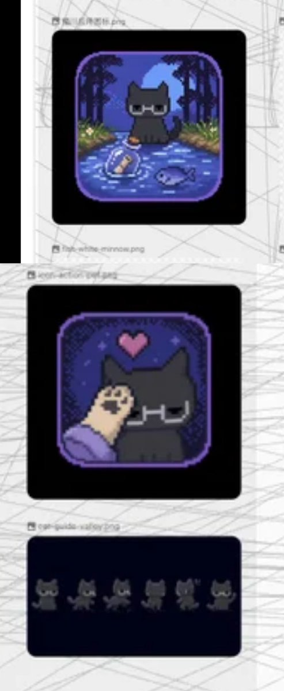
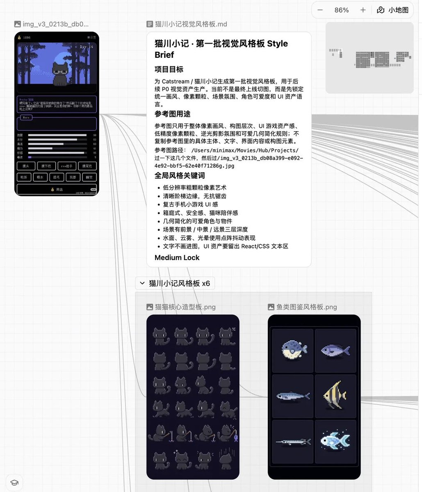
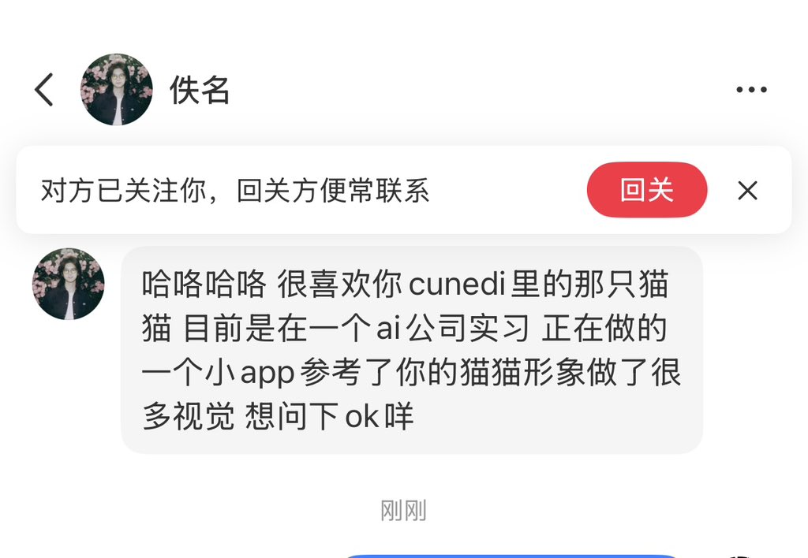

Cu
@copper1234000
现在就是对方这么回复
“公司是minimax 星野，咝 目前还是在筹备素材和方案当中 没有上线也没有任何商用 所有东西仅在我个人电脑上 如果说涉及到版权之类的话 我这边就直接全部删掉 然后也很抱歉没有事先跟你说明就用了你做的图”
然后给我发了这些图，我操，但我的图已经被喂ai被溶图了啊我操……这不是一模一样吗而且堂而皇之的放我的截图
…怎么办…好生气



Cu
@copper1234000
我操、我操、我操
要干嘛？先斩后奏？要干嘛？？？？？？ https://t.co/19L8Jik50N